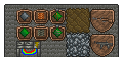
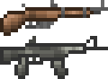

Tech and Dragons
A Terraria mod that will introduce many new weapons, items, enemies, and more based off a theme of Sci-Fi technology and Draconic influences.
Current plans are to add content all the way from early game to Moon Lord, then possible Post-Moon Lord as well.
Estimated Release Date: Spring 2021
Note: This is only a ESTIMATE and may change at any time.
Here are some images of the various parts of the mod so far.
From left to right, top to bottom:
Silicon Board, Blank PCB, Electro Crafter, Copper Wire Spool, Tin Wire Spool, Copper Traced PCB, Tin Traced PCB, Compact Old Tech, Silicon Ore, MN Rifle, T1 Assault

Close up of the two current guns, MN Rifle and T1 Assault

Close up of the four PCB items
Here is a quick Q&A about the mod.
Q: What was your inspiration for the mod?
A: Terraria, while being a mostly fantasy game, has hints and touches of Sci-Fi technology in it that most mods seem to miss or only barely expand upon.
This mods aims to close that gap a bit as well as add in some extra touches of Draconic influences for some extra excitement.
Q: Why is the Release Date only a estimate?
A: Due to college, I cannot guarentee a exact date for when it will come out. Please have patience!
Q: I wanna see more of the mod! Can you show more?
A: Well I'm glad you are excited for the mod and are wanting that bad to see more!
I will add more images and info to this web page as more in the mod is done. Please check back here occasionally to get updates and to stay up-to-date!